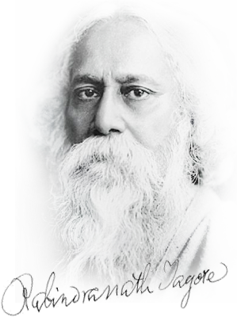

MAY
7th May - Buddha Purnima
Buddha's birthday is a Buddhist festival that is celebrated in most of East Asia commemorating the birth of the Prince Siddhartha Gautama, later the Gautama Buddha, and was founder of the Buddhism.
9th May - Rabindra Jayanti
Rabindra Jayanti is an annual cultural festival celebrated in remembrance of the birth anniversary of the great Indian poet, novelist and scholar, Rabindranath Tagore. Prevalent among the people from the Bengali community, this public holiday falls on the 25th day of Baisakh as per the Hindu calendar.
22nd May - Jamat-Ul-Vida
According to the Islamic cultures and traditions, every Friday of the week becomes a special day and source of blessings and salvation. Jamat-ul-Vida is also known as the Jummat-al-wida which indicates good wishes of the Holy Quran. People celebrate this festival by reciting their holy book Quran, special prayers and lots of social works such as feeding to poor and helpless people to get a reward from God.
25th May - Eid al-Fitr
Eid al-Fitr was originated by the Islamic prophet Muhammad. According to certain traditions, these festivals were initiated in Medina after the migration of Muhammad from Mecca. Anas, a well-known companion of the Prophet, narrated that, when the Prophet arrived in Medina, he found people celebrating two specific days in which they entertained themselves with recreation and merriment. At this, the Prophet remarked that Almighty has fixed two days of festivity instead of these for you which are better than these: Eid al-Fitr and Eid al-Adha.